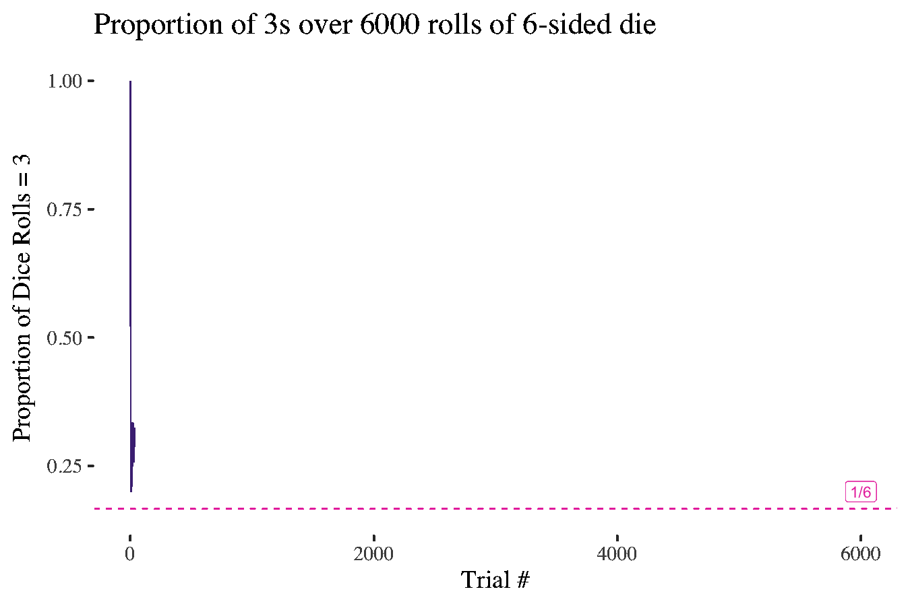
Probability and probability distributions
& Normal distributions
SOC 221 • Lecture 4
Probability and probability distributions
Descriptive –> Inferential statistics
Where are we?
- So far: Worked on descriptive statistics – tools to describe distributions
- NEXT: Building the tools for inferential statistics
- Example: Want to know about the average study time for the population of UW students.
- NEXT: Building the tools for inferential statistics
Inferential statistics
Statistical procedures used
to draw conclusions
(or inferences) about
a population based on
data drawn from a sample
\(\bar{X}\) —INFERENCE–> \(\mu_x\)
Descriptive –> Inferential statistics
Where are we?
- So far: Worked on descriptive statistics – tools to describe distributions
- NEXT: Building the tools for inferential statistics
- Example: Want to know about the average study time for the population of UW students.
- NEXT: Building the tools for inferential statistics
Inferential statistics
Statistical procedures used
to draw conclusions
(or inferences) about
a population based on
data drawn from a sample
\(\bar{X}\) —INFERENCE–> \(\mu_x\)
Population parameter: The characteristic of the population that we are interested in knowing (i.e. the mean study time of all UW students)
Sample statistic: The characteristic of the sample that we actually observe (i.e. the mean study time of a SAMPLE of UW students)
The challenge of making inferences
Drawing inferences entails uncertainty
Even with a good sample, the sample is likely to differ from the population (sample statistic is likely to be different from our population parameter, just by chance)
Challenge
Assessing the risk of being wrong (being way off) in making an inference from observed sample statistics to unknown population parameters.
Key questions
- How often would this procedure (drawing a sample, inferring about the population) give us something close to the correct answer if I used it over and over?
or - What is the probability that the inference I draw from one sample is wrong (way off from the population characteristic of interest)?
The answers to these questions rely on concepts of probability
Probability
Probability
The probability of any outcome of a random process is the proportion
of times the outcome would occur in a very long series of repetitions
\[ P = \frac{\text{# of times the outcome of interest could occur in one trial}}{\text{total # of possible outcomes or events}} \]
Probabilities
are simply the
relative frequency
of an outcome
Examples
- Probability of flipping a HEAD with a fair coin:
- \(P(H) = \frac{1}{2} = .50\)
- Probability of rolling a 3 with a 6-sided die
- \(P(3) = \frac{1}{6} = .1667\)
🪙
🎲
Random
Random
We call a phenomenon random if individual outcomes
are uncertain but there is nonetheless a regular
distribution of outcomes in a large number of repetitions.
Random =
- On any one trial, we don’t know what the outcome will be.
- But there is pattern to the outcomes, so we can guess what will happen if we do something many times (over the long run).
- Random is not the same as haphazard, unpredictable, or unexplained.
- The different possible outcomes of the trial = values of the random variable
Random
Random
We call a phenomenon random if individual outcomes
are uncertain but there is nonetheless a regular
distribution of outcomes in a large number of repetitions.
Some random phenomena
- Flipping a coin (random variable: whether result is head or tail)
- Selecting a single marble from a bag (random variable: color of the marble)
- Selecting an individual person from a larger group (random variable: level of education (or any other attribute) for the individual)
- Selecting a random sample from the set of all possible samples (random variable: the value of some statistic (mean, or variance, or correlation, slope, etc.) calculated for the sample)
Myths about randomness and probability
The myth of short-run regularity
Myth: If I flip a coin 10 times I should get 5 heads.
Reality: Over a short number of flips, you might get lots of heads or lots of tails. Probabilities express expectations only over the long run.
Example: Tossing a die to get a 3
• In the short-run, might get very few or very many 3s
• In the long-run 1/6 of the observations will be 3s
Myths about randomness and probability
The myth of short-run regularity
Myth: If I flip a coin 10 times I should get 5 heads.
Reality: Over a short number of flips, you might get lots of heads or lots of tails. Probabilities express expectations only over the long run.
There is a difference between theoretical probability (long run) and short-run experimental probability
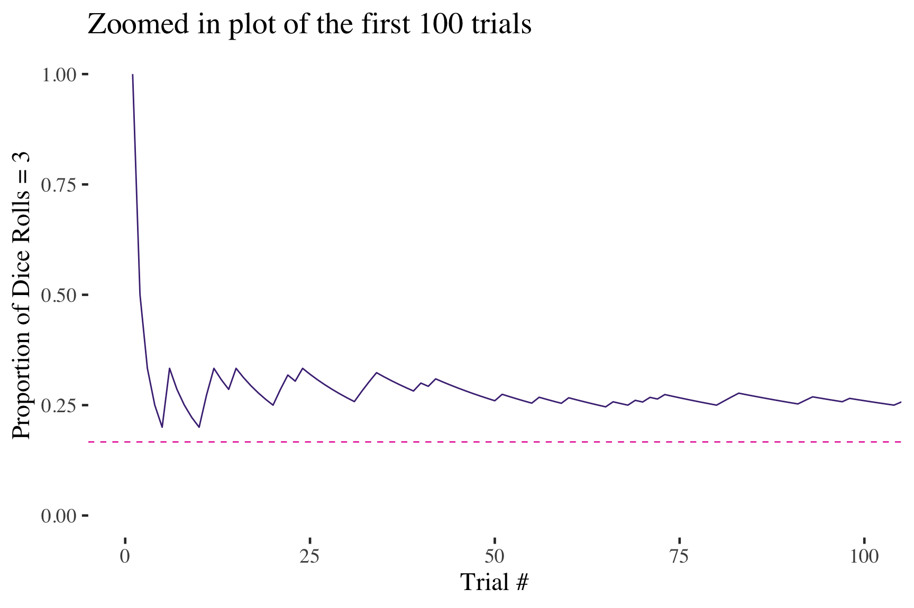
Myths about randomness and probability
The myth of short-run regularity
Myth: I’ve flipped eight heads in a row, so I’m “due” for a tail.
Reality: Since each new flip (trial) is independent, the outcome of the next flip is not affected by what happened in past flips.
🪙
Independence
In probability, two events are independent if the incidence of
one event does not affect the probability of the other event.
Must think about probabilities over
the long run
Our inferences will be based on theoretical probabilities over a huge number of repeated trials
Recall the key questions
What is the probability that the inference I draw from one sample is wrong (i.e. way off from the population characteristic of interest)?
Implications for inferential statistics
- We typically use one sample (very small number of trials) so may get a funky result.
- In the short-run (over a small number of trials) we might get sample results that do not represent the population very well.
- Won’t know how far off our one sample statistic is from the population parameter.
- Have to rely on probability theory about how things would end up over the long run (if we looked at a huge number of samples) to assess the probability of getting our one result.
Probability distribution
Probability distribution
For a random variable,
this specifies its
possible values
and their probabilities.
A discrete random variable X has separate values (such as 1,2, 3…) as its possible outcomes
Its probability distribution assigns a probability P(x) to each possible value of X
The sum of the probabilities for all the possible x values equals 1
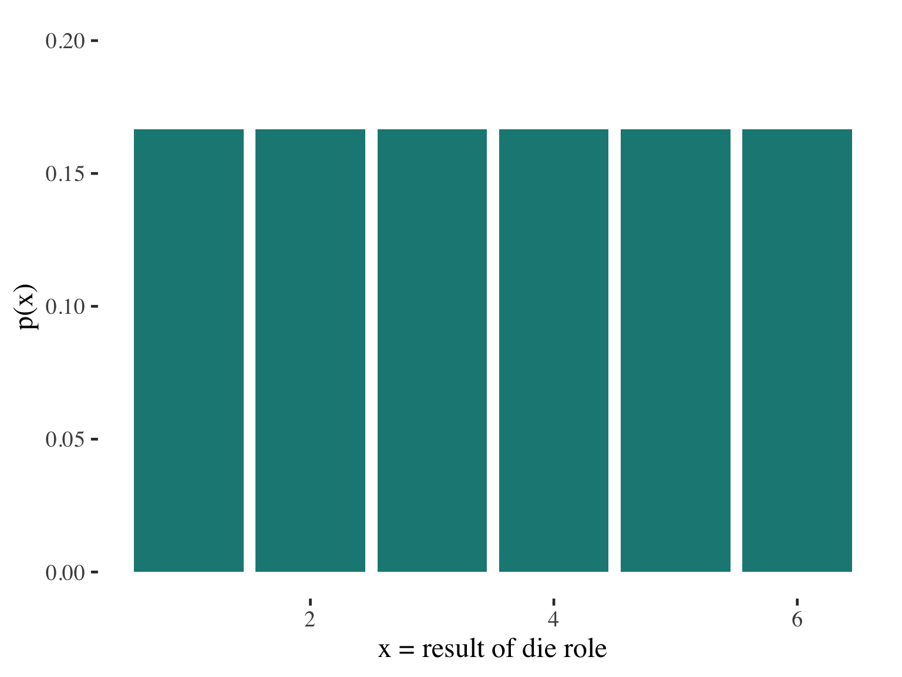
For each x, the probability P(x) falls between 0 and 1
Example: Probability distribution
What is the probability of a correct guess (choosing randomly) on a five-choice test question?
Probability distribution of guess outcomes
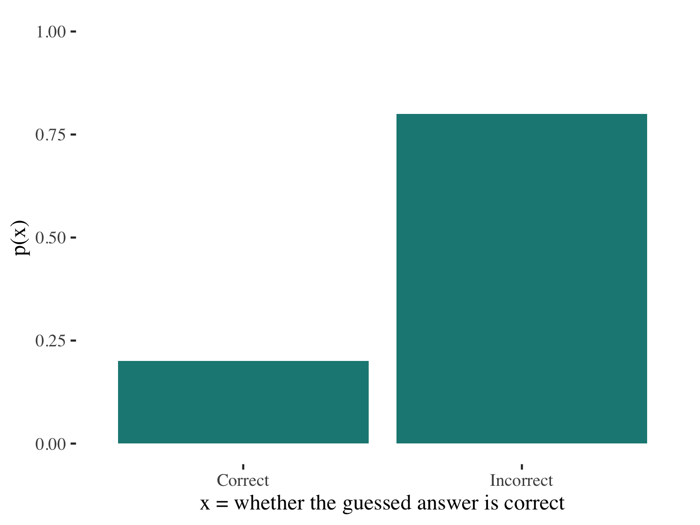
\[ P(C) = \frac{1}{5} = 0.2 \]
\[ P(I) = \frac{4}{5} = 0.8 \]
Note (again!):
Probabilities = Proportions
Example: Probability distribution
Probability distributions are reflected in frequency distributions
As long as every possible outcome is included, we can think of this as a probability distribution
Example: Probability distribution
Probability distributions are reflected in frequency distributions
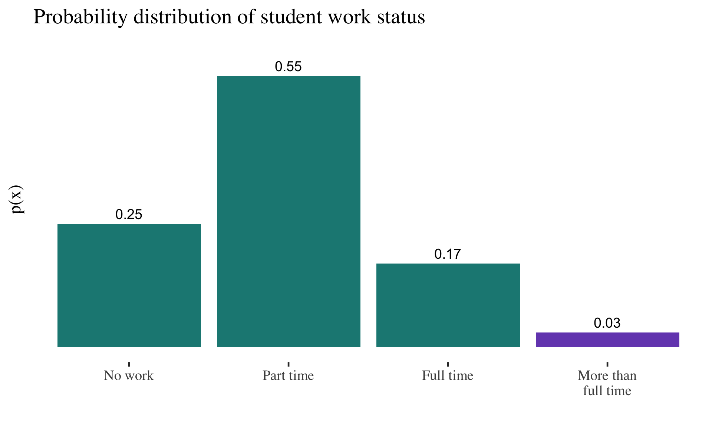
As long as every possible outcome is included, we can think of this as a probability distribution
For example: The
probability of randomly selecting a student who works more than full time is .03
Probability rules
Rule 1
The probability \(P(A)\) of any event A
satisfies \(0 \leq P(A) \leq 1\)
The probability of any single event, is always between 0 and 1.0
- An event, or outcome, with probability 0 never happens
- An event, or outcome, with probability 1 is a certainty
Rule 2
If \(S\) is the sample space in a
probability model, then \(P(S) = 1\)
Add up the probabilities of all these possible outcomes and the result will be 1.0
- Sample space is just the list of all possible outcomes
- A list of all the possibilities equals 100% of possibilities and one of them has to happen as a result of the trial
Probability rules
Rule 3: Addition Rule
The probability of any of several different mutually exclusive outcomes is equal to the sum of their separate probabilities
i.e., the probability of either outcome A or outcome B on one single trial:
\[ P(\text{A or B}) = P(A) + P(B) \]
Examples
- Probability of rolling a 5 or a 6 with a fair six-sided die?
\[ P(\text{5 or 6}) = \frac{1}{6} + \frac{1}{6} = 0.167 + 0.167 = 0.334 \]
- Probability of rolling any value below 4 with a fair six-sided die?
\[ P(\text{1 or 2 or 3}) = \frac{1}{6} + \frac{1}{6} + \frac{1}{6} = 0.167 + 0.167 + 0.167 = 0.50 \]
The probability of any of multiple outcomes happening is always larger than the probability of any one of the outcomes alone.
Probability rules
Examples
- Probability of rolling a 5 and a 6 on consecutive roles of a fair six-sided die?
\[ P(\text{5 and 6}) = \frac{1}{6} \times \frac{1}{6} = (0.167)(0.167) = 0.028 \]
- Probability of flipping 3 heads in a row?
\[ P(\text{H, H, H}) = \frac{1}{2} \times \frac{1}{2} \times \frac{1}{2} = (0.5)(0.5)(0.5)= 0.125 \]
The probability of a combination of multiple outcomes happening is always smaller than the probability of one of the outcomes happening independently.
Rule 4:
Multiplication Rule
The probability of a combination of independent outcomes is equal to the product of their separate probabilities
i.e., the probability of outcome A and outcome B on two independent trials:
\[ P(\text{A and B}) = P(A) \times P(B) \]
Examples: What is the probability of randomly selecting…
A single student who does not work?
Two consecutive students who do not work?
A single student who works at least full time?
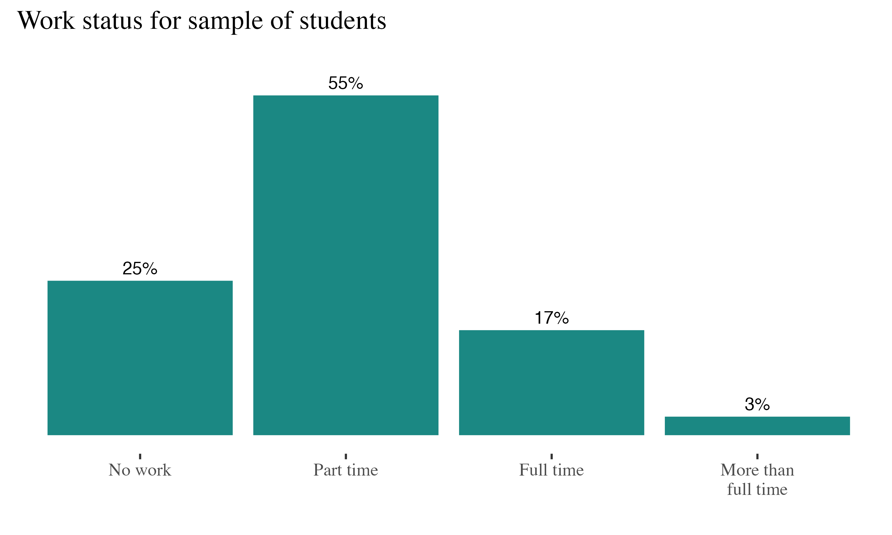
Examples: What is the probability of randomly selecting…
A single student who does not work?
\(P(nw) = 0.25\)
Examples: What is the probability of randomly selecting…
Two consecutive students who do not work?
\(P(\text{nw, nw}) = (0.25)(0.25) = 0.0625\)
Examples: What is the probability of randomly selecting…
A single student who works at least full time?
\(P(\text{ft or mft}) = 0.17 + 0.03 = 0.20\)
Examples: Probability distribution
Probability distributions are reflected in frequency distribution
Discrete probability distribution
Shows the probability of
a set of distinct,
separable outcomes.
Examples: Continuous probability distribution
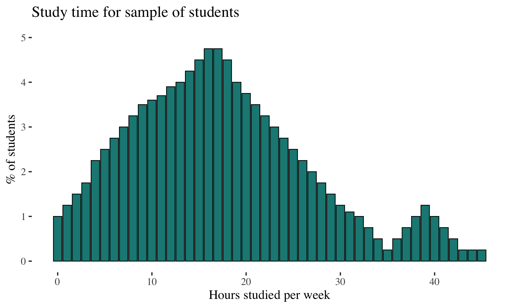
Probability density function
Shows the probability of a
set of continuous outcomes.
Can use a histogram to create a continuous probability distribution
Note: Continuous random variables have an infinite continuum of possible values in an interval (e.g., time, age, height, weight…)
Contrast to a discrete random variable (limited number of possible values)
Examples: Continuous probability distribution

Just smooth out the distribution
Can describe probabilities of observing values within a range under the curve
Examples: Continuous probability distribution
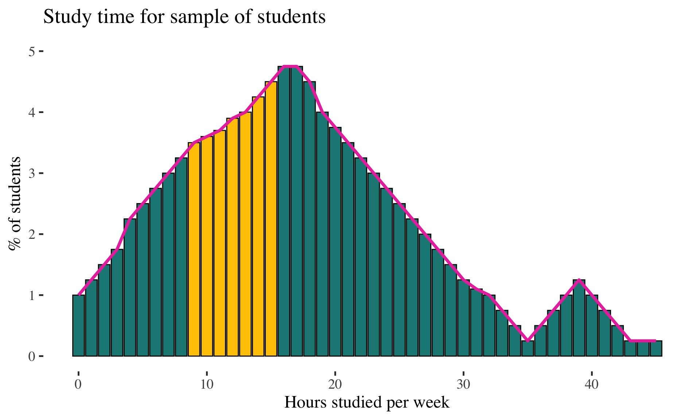
Just smooth out the distribution
Can describe probabilities of observing values within a range under the curve
EXAMPLE: If we know that 28.39% of students study between 9 and 15 hours, the probability of selecting a student from this range is .2839
Takeaway: Probability Distribution of a Continuous Random Variable
- A continuous random variable has possible values that form a curve (smoothing a histogram)
- Sometimes called a probability density function (pdf)
- Can think about probability of outcomes within a specific interval (range or a section under the curve)
- Probability = area under the curve for that interval
- Each interval has probability between 0 and 1
- The interval containing all possible values has probability equal to 1
Practice
An article in the New England Journal of Medicine, reported about a study of smokers in California and Hawaii. In one part of the report, the self-reported ethnicity and smoking levels per day were given (shown in the table below).
| Smoking Level (X) |
African American |
Native Hawaiian |
Latino/a |
Japanese |
White |
Totals (n) |
|---|---|---|---|---|---|---|
| 1-10 | 9,886 | 2,745 | 12,831 | 8,378 | 7,650 | |
| 11-20 | 6,514 | 3,062 | 4,932 | 10,680 | 9,877 | |
| 21-30 | 1,671 | 1,419 | 1,406 | 4,715 | 6,062 | |
| 31+ | 759 | 788 | 800 | 2,305 | 3,970 | |
| Totals (n) |
Complete the table above and answer the following questions:
- Explain the difference between the following random selections and find their associated probabilities:
- Picking a person who is Latino/a AND smokes 1 to 10 cigarettes per day.
- Picking a person who is Latino/a OR smokes 1 to 10 cigarettes per day.
- Picking a person who is Latino/a GIVEN that person smokes 1 to 10 cigarettes per day.
| Smoking Level (X) |
African American |
Native Hawaiian |
Latino/a |
Japanese |
White |
Totals (n) |
|---|---|---|---|---|---|---|
| 1-10 | 9,886 | 2,745 | 12,831 | 8,378 | 7,650 | 41,490 |
| 11-20 | 6,514 | 3,062 | 4,932 | 10,680 | 9,877 | 35,065 |
| 21-30 | 1,671 | 1,419 | 1,406 | 4,715 | 6,062 | 15,273 |
| 31+ | 759 | 788 | 800 | 2,305 | 3,970 | 8,622 |
| Totals (n) | 18,830 | 8,014 | 19,969 | 26,078 | 27,559 | 100,450 |
- Explain the difference between the following random selections and find their associated probabilities:
- Picking a person who is Latino/a AND smokes 1 to 10 cigarettes per day.
- Picking a person who is Latino/a OR smokes 1 to 10 cigarettes per day.
- Picking a person who is Latino/a GIVEN that person smokes 1 to 10 cigarettes per day.
To pick one person from the study who is Latino/a AND smokes 1 to 10 cigarettes per day means that the person has to meet both criteria: both Latino/a and smokes 1 to 10 cigarettes. The sample space should include everyone in the study.
\[ P(L \text{ AND } 1-10) = \frac{12,831}{100,450} = \text{0.1277352 or 0.128} \]
| Smoking Level (X) |
African American |
Native Hawaiian |
Latino/a |
Japanese |
White |
Totals (n) |
|---|---|---|---|---|---|---|
| 1-10 | 9,886 | 2,745 | 12,831 | 8,378 | 7,650 | 41,490 |
| 11-20 | 6,514 | 3,062 | 4,932 | 10,680 | 9,877 | 35,065 |
| 21-30 | 1,671 | 1,419 | 1,406 | 4,715 | 6,062 | 15,273 |
| 31+ | 759 | 788 | 800 | 2,305 | 3,970 | 8,622 |
| Totals (n) | 18,830 | 8,014 | 19,969 | 26,078 | 27,559 | 100,450 |
- Explain the difference between the following random selections and find their associated probabilities:
- Picking a person who is Latino/a AND smokes 1 to 10 cigarettes per day.
- Picking a person who is Latino/a OR smokes 1 to 10 cigarettes per day.
- Picking a person who is Latino/a GIVEN that person smokes 1 to 10 cigarettes per day.
To pick one person from the study who is Latino/a OR smokes 1 to 10 cigarettes per day means that the person has to meet either criteria: either Latino/a or smokes 1 to 10 cigarettes. The sample space should include everyone in the study.
\[ P(L \text{ OR } 1-10) = \frac{(19,969 + 41,490) - 12,831}{100,450} = \frac{48,628}{100,450} = \text{0.4841015 or 0.484} \]
| Smoking Level (X) |
African American |
Native Hawaiian |
Latino/a |
Japanese |
White |
Totals (n) |
|---|---|---|---|---|---|---|
| 1-10 | 9,886 | 2,745 | 12,831 | 8,378 | 7,650 | 41,490 |
| 11-20 | 6,514 | 3,062 | 4,932 | 10,680 | 9,877 | 35,065 |
| 21-30 | 1,671 | 1,419 | 1,406 | 4,715 | 6,062 | 15,273 |
| 31+ | 759 | 788 | 800 | 2,305 | 3,970 | 8,622 |
| Totals (n) | 18,830 | 8,014 | 19,969 | 26,078 | 27,559 | 100,450 |
- Explain the difference between the following random selections and find their associated probabilities:
- Picking a person who is Latino/a AND smokes 1 to 10 cigarettes per day.
- Picking a person who is Latino/a OR smokes 1 to 10 cigarettes per day.
- Picking a person who is Latino/a GIVEN that person smokes 1 to 10 cigarettes per day.
To pick one person from the study who is Latino/a GIVEN that person smokes 1 to 10 cigarettes per day means that the person must fulfill both criteria and the sample space is reduced to those who smoke 1-10 cigarettes per day.
\[ P(L|1-10) = \frac{12,831}{41,490} = \text{0.3092552 or 0.309} \]
Break!
Normal distributions
How does this help us?
In inferential statistics, we have to make use of distributions we don’t actually observe
↓
If we know enough about the SHAPE of the distribution, we can still make PROBABILITY STATEMENTS from the distribution without actually observing the distribution.
→
NORMAL DISTRIBUTION
Continuous probability distribution
frequently used in inferential statistics
• Theoretical model
• But useful because:
1) its shape is well known
(familiar pdf); and
2) under certain conditions,
distributions that we need to
know about follow a normal
curve
How does this help us?
Characteristics of the
Normal Distribution
- Bell shaped
- Symmetric around the mean (and median and single mode)
- Declining frequencies on tails
- Both tails continue infinitely ever closer to 0 but without touching the baseline
←
NORMAL DISTRIBUTION
Continuous probability distribution
frequently used in inferentialstatistics
• Theoretical model
• But useful because:
1) its shape is well known
(familiar pdf); and
2) under certain conditions,
distributions that we need to
know about follow a normal
curve
Normal distribution
We describe the specific shape of the normal distribution using its mean and standard deviation
Mean = \(\mu\)
Standard deviation = \(\sigma\)
Greek letter mew
Greek letter sigma
Note that we are using Greek symbols to highlight that we are thinking of the normal distribution as a theoretical distribution of all possible values in a population.
\(N(\mu, \sigma)\) Read as: A normal distribution with mean mew and standard deviation sigma
Normal distribution
The mean (\(\mu\)) and the standard deviation (\(\sigma\)) completely describe the density curve for a normal distribution
- Increasing/decreasing \(\mu\) moves the curve along the horizontal axis
- Increasing/decreasing \(\sigma\) determines the spread of the curve
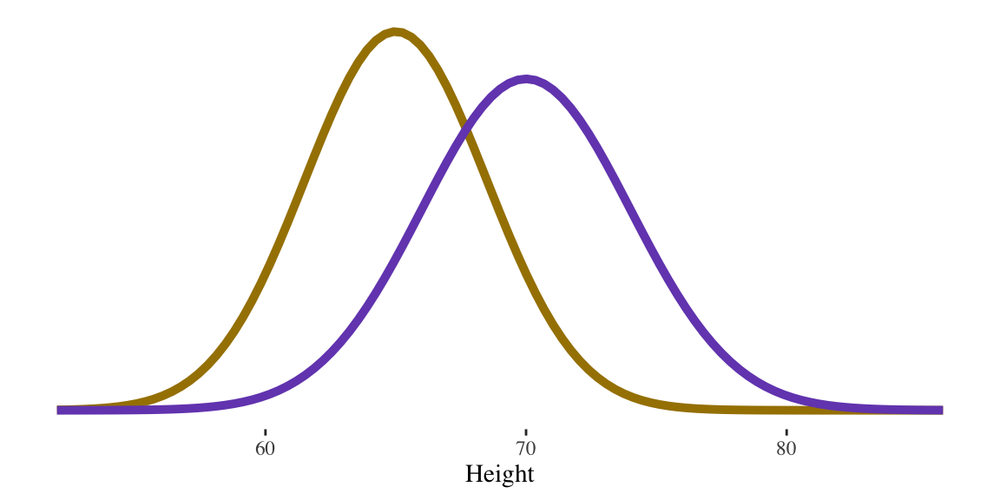
Women \(N(65, 3.5)\)
Men \(N(70, 4.0)\)
Consistent areas under the normal curve
Empirical (68-95-99) Rule
For ANY Normal Curve
- 68.26% of the observations fall within one \(\sigma\) of the mean (\(\mu\))
- 95.44% of the observations fall within two \(\sigma\) of the mean (\(\mu\))
- 99.73% of the observations fall within three \(\sigma\) of the mean (\(\mu\))
Example of consistent areas under the normal curve
- Heights of adult women
- Roughly follow a normal distribution
- \(\mu\) = 65 inches; \(\sigma\) = 3.5 inches
Also, probability of randomly selecting a woman who is between 54.5 and 75.5 inches is 99.73/100 = .9973
- Apply 68-95-99.7 Rule for women’s heights
- 68.26% are between 61.5 and 68.5 in.
- [ \(\mu \pm \sigma\) = 65 ± 3.5 ]
- 95.44% are between 58 and 72 inches
- [ \(\mu \pm \sigma\) = 65 ± 2(3.5) = 65 ± 7 ]
- 99.73% are between 54.5 and 75.5 inches
- [ \(\mu \pm \sigma\) = 65 ± 3(3.5) = 65 ± 10.5 ]
- 68.26% are between 61.5 and 68.5 in.
Women \(N(65, 3.5)\)
Example of consistent areas under the normal curve
Notice that when we are finding areas under the normal curve, we are always thinking in terms of standard deviation units
e.g., how many standard deviations away from the mean of the distribution are we?
Called a standard normal distribution
Standard normal distribution
Can find the percentage of cases under ANY part of the normal curve by thinking of the normal distribution as a standard normal distribution
We can convert any normal distribution into a standard normal distribution . . .
. . . just need to convert all scores to standard deviation units
STANDARD
NORMAL
DISTRIBUTION
A normal distribution
(symmetrical, bell-shaped,
single peak) with…
• Mean = 0
• Standard deviation = 1
\(N(0,1)\)
Normal distribution and standardized z-scores
Can find the percentage of cases under ANY part of the normal curve by thinking of the normal distribution as a standard normal distribution
\[ z = \frac{X - \mu}{\sigma} \]
where
• \(\mu\) = mean of a distribution
• \(\sigma\) = standard deviation of a distribution
• \(z\) = standard score
Convert any normal distribution into a standard normal distribution by converting scores to standardized (Z) scores
standardized (\(Z\)) score
A score indicating
the direction and degree
that any raw score
deviates from the mean
in standard deviation units
Think for a moment
Distribution of height for women, \(N(65, 3.5)\)
• Z-score for a woman that is 69 inches?
A woman 69 inches tall is just over one standard deviation above average.
• Z-score for a woman that is 55 inches?
A woman 55 inches tall is almost three standard deviations below average.
• Z-score for a woman that is 5 feet tall?
A woman 5 feet tall is almost one and a half standard deviations below average.
\[z = \frac{69-65}{3.5} = 1.14\]
\[z = \frac{55-65}{3.5} = -2.86\]
\[z = \frac{60-65}{3.5} = -1.43\]
Standard Normal distribution
How does this help us?
Allows us to find proportions, percentages, or probabilities associated with more specific areas under the normal curve
- Already know, for example, that about 34% (half of 68%) falls between the mean and a z-score of 1 (one standard deviation above the mean)
- We will be able to do this more precisely
- Will be able to tell the percentage of cases falling…
- between the mean and 1.25 standard deviations
- below -3.30 standard deviations
- between z-scores of -1.96 and 1.96
- etc.
- Can convert all to proportions and probabilities
Standard Normal distribution
How does this help us?
Allows us to find proportions, percentages, or probabilities associated with more specific areas under the normal curve
For example, if we know that the distribution of height for women is N(65,3.5) . . .
. . . we can figure out the percentage of women in the distribution who are shorter than 5 feet tall (or the probability of selecting such a woman) without actually looking at the individual women making up the distribution
Steps for finding area under the normal curve
Note: these steps can happen out of order!
- Draw the picture, roughly showing the area under the curve that you are looking for (highly recommended)
- Convert value(s) of interest into z-score(s)
- Use standard normal table (linked in the back of the book) to find proportion of cases between the mean and the z-score
- Subtract or add areas under the curve to get the total proportion you are looking for (see the picture from step 1)
- Convert to percentages or probabilities as required by the problem
STEP 1
Draw the picture (highly recommended)
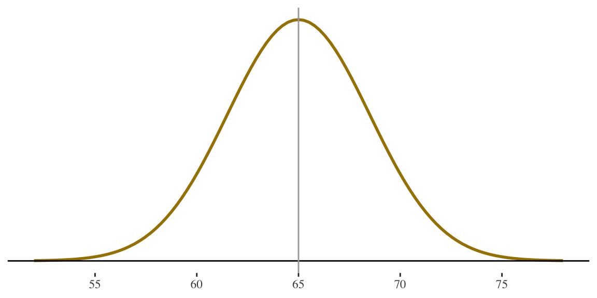
If height for women is \(N(65,3.5)\) what percentage of women are shorter than 5 feet tall (i.e., 60 inches)?
STEP 1
Draw the picture (highly recommended)
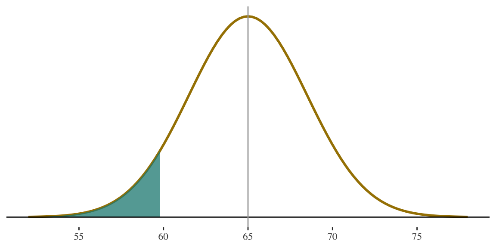
If height for women is \(N(65,3.5)\) what percentage of women are shorter than 5 feet tall (i.e., 60 inches)?
5 feet is 60 inches. I know that is somewhere below the mean, and I’m interested in the area below that point.
STEP 2
Convert value(s) of interest into z-score(s)

If height for women is \(N(65,3.5)\) what percentage of women are shorter than 5 feet tall (i.e., 60 inches)?
\[ z = \frac{60 - 65}{3.5} = -1.43 \]
5 feet is 1.43 standard deviations below average.
STEP 2
Convert value(s) of interest into z-score(s)
If height for women is \(N(65,3.5)\) what percentage of women are shorter than 5 feet tall (i.e., 60 inches)?
\[ z = \frac{60 - 65}{3.5} = -1.43 \]
5 feet is 1.43 standard deviations below average.
STEP 3
Use standard normal table\(^1\) to find proportion of cases between the mean and the z-score

If height for women is \(N(65,3.5)\) what percentage of women are shorter than 5 feet tall (i.e., 60 inches)?
Table will give us this area
\(^1\)A standard normal table can be found here
How to use a standard normal (z-score) table
| 0 | 0.1 | 0.2 | 0.3 | 0.4 | 0.5 | 0.6 | 0.7 | 0.8 | 0.9 | 1 | 1.1 | 1.2 | 1.3 | 1.4 | 1.5 | 1.6 | 1.7 | 1.8 | 1.9 | 2 | 2.1 | 2.2 | 2.3 | 2.4 | 2.5 | 2.6 | 2.7 | 2.8 | 2.9 | 3 | 3.1 | 3.2 | 3.3 | 3.4 | |
|---|---|---|---|---|---|---|---|---|---|---|---|---|---|---|---|---|---|---|---|---|---|---|---|---|---|---|---|---|---|---|---|---|---|---|---|
| 0 | 0.000000 | 0.03983 | 0.07926 | 0.1179 | 0.1554 | 0.1915 | 0.2257 | 0.2580 | 0.2881 | 0.3159 | 0.3413 | 0.3643 | 0.3849 | 0.4032 | 0.4192 | 0.4332 | 0.4452 | 0.4554 | 0.4641 | 0.4713 | 0.4772 | 0.4821 | 0.4861 | 0.4893 | 0.4918 | 0.4938 | 0.4953 | 0.4965 | 0.4974 | 0.4981 | 0.4987 | 0.4990 | 0.4993 | 0.4995 | 0.4997 |
| 0.01 | 0.003989 | 0.04380 | 0.08317 | 0.1217 | 0.1591 | 0.1950 | 0.2291 | 0.2611 | 0.2910 | 0.3186 | 0.3438 | 0.3665 | 0.3869 | 0.4049 | 0.4207 | 0.4345 | 0.4463 | 0.4564 | 0.4649 | 0.4719 | 0.4778 | 0.4826 | 0.4864 | 0.4896 | 0.4920 | 0.4940 | 0.4955 | 0.4966 | 0.4975 | 0.4982 | 0.4987 | 0.4991 | 0.4993 | 0.4995 | 0.4997 |
| 0.02 | 0.007978 | 0.04776 | 0.08706 | 0.1255 | 0.1628 | 0.1985 | 0.2324 | 0.2642 | 0.2939 | 0.3212 | 0.3461 | 0.3686 | 0.3888 | 0.4066 | 0.4222 | 0.4357 | 0.4474 | 0.4573 | 0.4656 | 0.4726 | 0.4783 | 0.4830 | 0.4868 | 0.4898 | 0.4922 | 0.4941 | 0.4956 | 0.4967 | 0.4976 | 0.4982 | 0.4987 | 0.4991 | 0.4994 | 0.4995 | 0.4997 |
| 0.03 | 0.011966 | 0.05172 | 0.09095 | 0.1293 | 0.1664 | 0.2019 | 0.2357 | 0.2673 | 0.2967 | 0.3238 | 0.3485 | 0.3708 | 0.3907 | 0.4082 | 0.4236 | 0.4370 | 0.4484 | 0.4582 | 0.4664 | 0.4732 | 0.4788 | 0.4834 | 0.4871 | 0.4901 | 0.4925 | 0.4943 | 0.4957 | 0.4968 | 0.4977 | 0.4983 | 0.4988 | 0.4991 | 0.4994 | 0.4996 | 0.4997 |
| 0.04 | 0.015953 | 0.05567 | 0.09483 | 0.1331 | 0.1700 | 0.2054 | 0.2389 | 0.2704 | 0.2995 | 0.3264 | 0.3508 | 0.3729 | 0.3925 | 0.4099 | 0.4251 | 0.4382 | 0.4495 | 0.4591 | 0.4671 | 0.4738 | 0.4793 | 0.4838 | 0.4875 | 0.4904 | 0.4927 | 0.4945 | 0.4959 | 0.4969 | 0.4977 | 0.4984 | 0.4988 | 0.4992 | 0.4994 | 0.4996 | 0.4997 |
| 0.05 | 0.019939 | 0.05962 | 0.09871 | 0.1368 | 0.1736 | 0.2088 | 0.2422 | 0.2734 | 0.3023 | 0.3289 | 0.3531 | 0.3749 | 0.3944 | 0.4115 | 0.4265 | 0.4394 | 0.4505 | 0.4599 | 0.4678 | 0.4744 | 0.4798 | 0.4842 | 0.4878 | 0.4906 | 0.4929 | 0.4946 | 0.4960 | 0.4970 | 0.4978 | 0.4984 | 0.4989 | 0.4992 | 0.4994 | 0.4996 | 0.4997 |
| 0.06 | 0.023922 | 0.06356 | 0.10257 | 0.1406 | 0.1772 | 0.2123 | 0.2454 | 0.2764 | 0.3051 | 0.3315 | 0.3554 | 0.3770 | 0.3962 | 0.4131 | 0.4279 | 0.4406 | 0.4515 | 0.4608 | 0.4686 | 0.4750 | 0.4803 | 0.4846 | 0.4881 | 0.4909 | 0.4931 | 0.4948 | 0.4961 | 0.4971 | 0.4979 | 0.4985 | 0.4989 | 0.4992 | 0.4994 | 0.4996 | 0.4997 |
| 0.07 | 0.027903 | 0.06749 | 0.10642 | 0.1443 | 0.1808 | 0.2157 | 0.2486 | 0.2794 | 0.3078 | 0.3340 | 0.3577 | 0.3790 | 0.3980 | 0.4147 | 0.4292 | 0.4418 | 0.4525 | 0.4616 | 0.4693 | 0.4756 | 0.4808 | 0.4850 | 0.4884 | 0.4911 | 0.4932 | 0.4949 | 0.4962 | 0.4972 | 0.4979 | 0.4985 | 0.4989 | 0.4992 | 0.4995 | 0.4996 | 0.4997 |
| 0.08 | 0.031881 | 0.07142 | 0.11026 | 0.1480 | 0.1844 | 0.2190 | 0.2517 | 0.2823 | 0.3106 | 0.3365 | 0.3599 | 0.3810 | 0.3997 | 0.4162 | 0.4306 | 0.4429 | 0.4535 | 0.4625 | 0.4699 | 0.4761 | 0.4812 | 0.4854 | 0.4887 | 0.4913 | 0.4934 | 0.4951 | 0.4963 | 0.4973 | 0.4980 | 0.4986 | 0.4990 | 0.4993 | 0.4995 | 0.4996 | 0.4997 |
| 0.09 | 0.035856 | 0.07535 | 0.11409 | 0.1517 | 0.1879 | 0.2224 | 0.2549 | 0.2852 | 0.3133 | 0.3389 | 0.3621 | 0.3830 | 0.4015 | 0.4177 | 0.4319 | 0.4441 | 0.4545 | 0.4633 | 0.4706 | 0.4767 | 0.4817 | 0.4857 | 0.4890 | 0.4916 | 0.4936 | 0.4952 | 0.4964 | 0.4974 | 0.4981 | 0.4986 | 0.4990 | 0.4993 | 0.4995 | 0.4997 | 0.4998 |
- Use the table to look up (the absolute value) of your z-score
- Our z-score is -1.43, so we use the table to look up 1.43
How to use a standard normal (z-score) table
| 0 | 0.1 | 0.2 | 0.3 | 0.4 | 0.5 | 0.6 | 0.7 | 0.8 | 0.9 | 1 | 1.1 | 1.2 | 1.3 | 1.4 | 1.5 | 1.6 | 1.7 | 1.8 | 1.9 | 2 | 2.1 | 2.2 | 2.3 | 2.4 | 2.5 | 2.6 | 2.7 | 2.8 | 2.9 | 3 | 3.1 | 3.2 | 3.3 | 3.4 | |
|---|---|---|---|---|---|---|---|---|---|---|---|---|---|---|---|---|---|---|---|---|---|---|---|---|---|---|---|---|---|---|---|---|---|---|---|
| 0 | 0.000000 | 0.03983 | 0.07926 | 0.1179 | 0.1554 | 0.1915 | 0.2257 | 0.2580 | 0.2881 | 0.3159 | 0.3413 | 0.3643 | 0.3849 | 0.4032 | 0.4192 | 0.4332 | 0.4452 | 0.4554 | 0.4641 | 0.4713 | 0.4772 | 0.4821 | 0.4861 | 0.4893 | 0.4918 | 0.4938 | 0.4953 | 0.4965 | 0.4974 | 0.4981 | 0.4987 | 0.4990 | 0.4993 | 0.4995 | 0.4997 |
| 0.01 | 0.003989 | 0.04380 | 0.08317 | 0.1217 | 0.1591 | 0.1950 | 0.2291 | 0.2611 | 0.2910 | 0.3186 | 0.3438 | 0.3665 | 0.3869 | 0.4049 | 0.4207 | 0.4345 | 0.4463 | 0.4564 | 0.4649 | 0.4719 | 0.4778 | 0.4826 | 0.4864 | 0.4896 | 0.4920 | 0.4940 | 0.4955 | 0.4966 | 0.4975 | 0.4982 | 0.4987 | 0.4991 | 0.4993 | 0.4995 | 0.4997 |
| 0.02 | 0.007978 | 0.04776 | 0.08706 | 0.1255 | 0.1628 | 0.1985 | 0.2324 | 0.2642 | 0.2939 | 0.3212 | 0.3461 | 0.3686 | 0.3888 | 0.4066 | 0.4222 | 0.4357 | 0.4474 | 0.4573 | 0.4656 | 0.4726 | 0.4783 | 0.4830 | 0.4868 | 0.4898 | 0.4922 | 0.4941 | 0.4956 | 0.4967 | 0.4976 | 0.4982 | 0.4987 | 0.4991 | 0.4994 | 0.4995 | 0.4997 |
| 0.03 | 0.011966 | 0.05172 | 0.09095 | 0.1293 | 0.1664 | 0.2019 | 0.2357 | 0.2673 | 0.2967 | 0.3238 | 0.3485 | 0.3708 | 0.3907 | 0.4082 | 0.4236 | 0.4370 | 0.4484 | 0.4582 | 0.4664 | 0.4732 | 0.4788 | 0.4834 | 0.4871 | 0.4901 | 0.4925 | 0.4943 | 0.4957 | 0.4968 | 0.4977 | 0.4983 | 0.4988 | 0.4991 | 0.4994 | 0.4996 | 0.4997 |
| 0.04 | 0.015953 | 0.05567 | 0.09483 | 0.1331 | 0.1700 | 0.2054 | 0.2389 | 0.2704 | 0.2995 | 0.3264 | 0.3508 | 0.3729 | 0.3925 | 0.4099 | 0.4251 | 0.4382 | 0.4495 | 0.4591 | 0.4671 | 0.4738 | 0.4793 | 0.4838 | 0.4875 | 0.4904 | 0.4927 | 0.4945 | 0.4959 | 0.4969 | 0.4977 | 0.4984 | 0.4988 | 0.4992 | 0.4994 | 0.4996 | 0.4997 |
| 0.05 | 0.019939 | 0.05962 | 0.09871 | 0.1368 | 0.1736 | 0.2088 | 0.2422 | 0.2734 | 0.3023 | 0.3289 | 0.3531 | 0.3749 | 0.3944 | 0.4115 | 0.4265 | 0.4394 | 0.4505 | 0.4599 | 0.4678 | 0.4744 | 0.4798 | 0.4842 | 0.4878 | 0.4906 | 0.4929 | 0.4946 | 0.4960 | 0.4970 | 0.4978 | 0.4984 | 0.4989 | 0.4992 | 0.4994 | 0.4996 | 0.4997 |
| 0.06 | 0.023922 | 0.06356 | 0.10257 | 0.1406 | 0.1772 | 0.2123 | 0.2454 | 0.2764 | 0.3051 | 0.3315 | 0.3554 | 0.3770 | 0.3962 | 0.4131 | 0.4279 | 0.4406 | 0.4515 | 0.4608 | 0.4686 | 0.4750 | 0.4803 | 0.4846 | 0.4881 | 0.4909 | 0.4931 | 0.4948 | 0.4961 | 0.4971 | 0.4979 | 0.4985 | 0.4989 | 0.4992 | 0.4994 | 0.4996 | 0.4997 |
| 0.07 | 0.027903 | 0.06749 | 0.10642 | 0.1443 | 0.1808 | 0.2157 | 0.2486 | 0.2794 | 0.3078 | 0.3340 | 0.3577 | 0.3790 | 0.3980 | 0.4147 | 0.4292 | 0.4418 | 0.4525 | 0.4616 | 0.4693 | 0.4756 | 0.4808 | 0.4850 | 0.4884 | 0.4911 | 0.4932 | 0.4949 | 0.4962 | 0.4972 | 0.4979 | 0.4985 | 0.4989 | 0.4992 | 0.4995 | 0.4996 | 0.4997 |
| 0.08 | 0.031881 | 0.07142 | 0.11026 | 0.1480 | 0.1844 | 0.2190 | 0.2517 | 0.2823 | 0.3106 | 0.3365 | 0.3599 | 0.3810 | 0.3997 | 0.4162 | 0.4306 | 0.4429 | 0.4535 | 0.4625 | 0.4699 | 0.4761 | 0.4812 | 0.4854 | 0.4887 | 0.4913 | 0.4934 | 0.4951 | 0.4963 | 0.4973 | 0.4980 | 0.4986 | 0.4990 | 0.4993 | 0.4995 | 0.4996 | 0.4997 |
| 0.09 | 0.035856 | 0.07535 | 0.11409 | 0.1517 | 0.1879 | 0.2224 | 0.2549 | 0.2852 | 0.3133 | 0.3389 | 0.3621 | 0.3830 | 0.4015 | 0.4177 | 0.4319 | 0.4441 | 0.4545 | 0.4633 | 0.4706 | 0.4767 | 0.4817 | 0.4857 | 0.4890 | 0.4916 | 0.4936 | 0.4952 | 0.4964 | 0.4974 | 0.4981 | 0.4986 | 0.4990 | 0.4993 | 0.4995 | 0.4997 | 0.4998 |
⬇️
➡️
- Combine the numbers at the beginning of the row and the top of the column to find z. Columns gives us the 1.4 part and the row 0.03 gives us the last decimal place for 1.43. So, we are looking for the number at the intersection of the 1.4 column and the 0.03 row.
How to use a standard normal (z-score) table
| 0 | 0.1 | 0.2 | 0.3 | 0.4 | 0.5 | 0.6 | 0.7 | 0.8 | 0.9 | 1 | 1.1 | 1.2 | 1.3 | 1.4 | 1.5 | 1.6 | 1.7 | 1.8 | 1.9 | 2 | 2.1 | 2.2 | 2.3 | 2.4 | 2.5 | 2.6 | 2.7 | 2.8 | 2.9 | 3 | 3.1 | 3.2 | 3.3 | 3.4 | |
|---|---|---|---|---|---|---|---|---|---|---|---|---|---|---|---|---|---|---|---|---|---|---|---|---|---|---|---|---|---|---|---|---|---|---|---|
| 0 | 0.000000 | 0.03983 | 0.07926 | 0.1179 | 0.1554 | 0.1915 | 0.2257 | 0.2580 | 0.2881 | 0.3159 | 0.3413 | 0.3643 | 0.3849 | 0.4032 | 0.4192 | 0.4332 | 0.4452 | 0.4554 | 0.4641 | 0.4713 | 0.4772 | 0.4821 | 0.4861 | 0.4893 | 0.4918 | 0.4938 | 0.4953 | 0.4965 | 0.4974 | 0.4981 | 0.4987 | 0.4990 | 0.4993 | 0.4995 | 0.4997 |
| 0.01 | 0.003989 | 0.04380 | 0.08317 | 0.1217 | 0.1591 | 0.1950 | 0.2291 | 0.2611 | 0.2910 | 0.3186 | 0.3438 | 0.3665 | 0.3869 | 0.4049 | 0.4207 | 0.4345 | 0.4463 | 0.4564 | 0.4649 | 0.4719 | 0.4778 | 0.4826 | 0.4864 | 0.4896 | 0.4920 | 0.4940 | 0.4955 | 0.4966 | 0.4975 | 0.4982 | 0.4987 | 0.4991 | 0.4993 | 0.4995 | 0.4997 |
| 0.02 | 0.007978 | 0.04776 | 0.08706 | 0.1255 | 0.1628 | 0.1985 | 0.2324 | 0.2642 | 0.2939 | 0.3212 | 0.3461 | 0.3686 | 0.3888 | 0.4066 | 0.4222 | 0.4357 | 0.4474 | 0.4573 | 0.4656 | 0.4726 | 0.4783 | 0.4830 | 0.4868 | 0.4898 | 0.4922 | 0.4941 | 0.4956 | 0.4967 | 0.4976 | 0.4982 | 0.4987 | 0.4991 | 0.4994 | 0.4995 | 0.4997 |
| 0.03 | 0.011966 | 0.05172 | 0.09095 | 0.1293 | 0.1664 | 0.2019 | 0.2357 | 0.2673 | 0.2967 | 0.3238 | 0.3485 | 0.3708 | 0.3907 | 0.4082 | 0.4236 | 0.4370 | 0.4484 | 0.4582 | 0.4664 | 0.4732 | 0.4788 | 0.4834 | 0.4871 | 0.4901 | 0.4925 | 0.4943 | 0.4957 | 0.4968 | 0.4977 | 0.4983 | 0.4988 | 0.4991 | 0.4994 | 0.4996 | 0.4997 |
| 0.04 | 0.015953 | 0.05567 | 0.09483 | 0.1331 | 0.1700 | 0.2054 | 0.2389 | 0.2704 | 0.2995 | 0.3264 | 0.3508 | 0.3729 | 0.3925 | 0.4099 | 0.4251 | 0.4382 | 0.4495 | 0.4591 | 0.4671 | 0.4738 | 0.4793 | 0.4838 | 0.4875 | 0.4904 | 0.4927 | 0.4945 | 0.4959 | 0.4969 | 0.4977 | 0.4984 | 0.4988 | 0.4992 | 0.4994 | 0.4996 | 0.4997 |
| 0.05 | 0.019939 | 0.05962 | 0.09871 | 0.1368 | 0.1736 | 0.2088 | 0.2422 | 0.2734 | 0.3023 | 0.3289 | 0.3531 | 0.3749 | 0.3944 | 0.4115 | 0.4265 | 0.4394 | 0.4505 | 0.4599 | 0.4678 | 0.4744 | 0.4798 | 0.4842 | 0.4878 | 0.4906 | 0.4929 | 0.4946 | 0.4960 | 0.4970 | 0.4978 | 0.4984 | 0.4989 | 0.4992 | 0.4994 | 0.4996 | 0.4997 |
| 0.06 | 0.023922 | 0.06356 | 0.10257 | 0.1406 | 0.1772 | 0.2123 | 0.2454 | 0.2764 | 0.3051 | 0.3315 | 0.3554 | 0.3770 | 0.3962 | 0.4131 | 0.4279 | 0.4406 | 0.4515 | 0.4608 | 0.4686 | 0.4750 | 0.4803 | 0.4846 | 0.4881 | 0.4909 | 0.4931 | 0.4948 | 0.4961 | 0.4971 | 0.4979 | 0.4985 | 0.4989 | 0.4992 | 0.4994 | 0.4996 | 0.4997 |
| 0.07 | 0.027903 | 0.06749 | 0.10642 | 0.1443 | 0.1808 | 0.2157 | 0.2486 | 0.2794 | 0.3078 | 0.3340 | 0.3577 | 0.3790 | 0.3980 | 0.4147 | 0.4292 | 0.4418 | 0.4525 | 0.4616 | 0.4693 | 0.4756 | 0.4808 | 0.4850 | 0.4884 | 0.4911 | 0.4932 | 0.4949 | 0.4962 | 0.4972 | 0.4979 | 0.4985 | 0.4989 | 0.4992 | 0.4995 | 0.4996 | 0.4997 |
| 0.08 | 0.031881 | 0.07142 | 0.11026 | 0.1480 | 0.1844 | 0.2190 | 0.2517 | 0.2823 | 0.3106 | 0.3365 | 0.3599 | 0.3810 | 0.3997 | 0.4162 | 0.4306 | 0.4429 | 0.4535 | 0.4625 | 0.4699 | 0.4761 | 0.4812 | 0.4854 | 0.4887 | 0.4913 | 0.4934 | 0.4951 | 0.4963 | 0.4973 | 0.4980 | 0.4986 | 0.4990 | 0.4993 | 0.4995 | 0.4996 | 0.4997 |
| 0.09 | 0.035856 | 0.07535 | 0.11409 | 0.1517 | 0.1879 | 0.2224 | 0.2549 | 0.2852 | 0.3133 | 0.3389 | 0.3621 | 0.3830 | 0.4015 | 0.4177 | 0.4319 | 0.4441 | 0.4545 | 0.4633 | 0.4706 | 0.4767 | 0.4817 | 0.4857 | 0.4890 | 0.4916 | 0.4936 | 0.4952 | 0.4964 | 0.4974 | 0.4981 | 0.4986 | 0.4990 | 0.4993 | 0.4995 | 0.4997 | 0.4998 |
- Number in the body of the table gives us the PROPORTION of cases between the mean and our positive z-value. Since the z-distribution is symmetrical, this is the same as the proportion between the mean and the corresponding negative z-value.
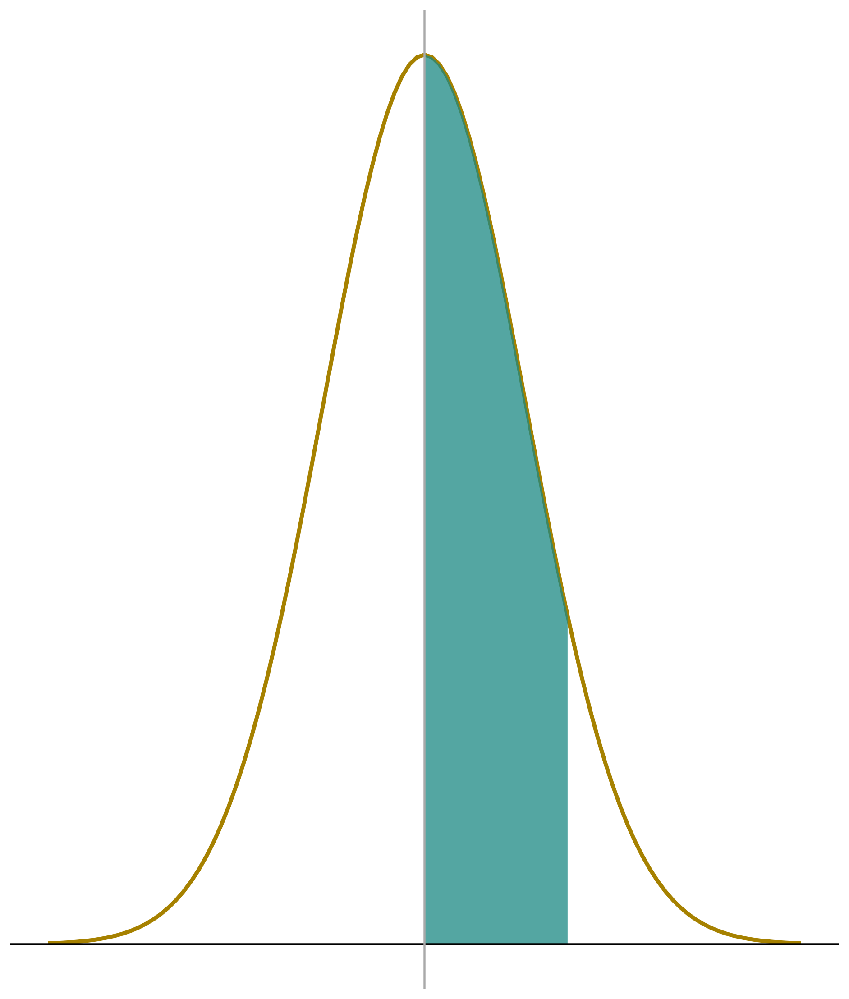
STEP 3
Use standard normal table\(^1\) to find proportion of cases between the mean and the z-score
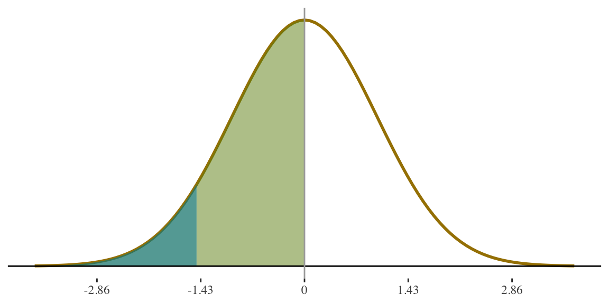
If height for women is \(N(65,3.5)\) what percentage of women are shorter than 5 feet tall (i.e., 60 inches)?
Proportion in this area is .4236
\(^1\)A standard normal table can be found here
STEP 4
Subtract or add areas under the curve to get the total proportion you are looking for\(^1\)

If height for women is \(N(65,3.5)\) what percentage of women are shorter than 5 feet tall (i.e., 60 inches)?
Since we know that each half of
the distribution contains 50% of cases . . .
. . . and this area is .4236 . . .
\(^1\)see the picture from step 1
. . . the proportion in our shaded area is
0.50 - 0.4236 = 0.0764
STEP 5
Convert to percentages or probabilities as required by the problem

If height for women is \(N(65,3.5)\) what percentage of women are shorter than 5 feet tall (i.e., 60 inches)?
Multiply by 100 to get
from proportion to percentage:
\[
0.0764(100) = 7.636\%
\]
Answer: 7.64% of women
are shorter than 5 feet
. . . the proportion in our shaded area is
0.50 - 0.4236 = 0.0764
More examples
Think creatively to use the information in the Normal Table to figure out what you want to know
- Percentage of women shorter than 55 inches?
- Percentage of women 55 inches or taller?
- Probability of randomly selecting a woman who is 69 inches or taller?
- Probability of randomly selecting two women, on consecutive draws, who are 69 inches or taller?
- Find the score at the 10th percentile in the distribution.
- Find the two heights that define the middle 95% of cases in the distribution.
Height for women is
\(N(65,3.5)\)
1. Percentage of women shorter than 55 inches?
Height for women is
\(N(65,3.5)\)
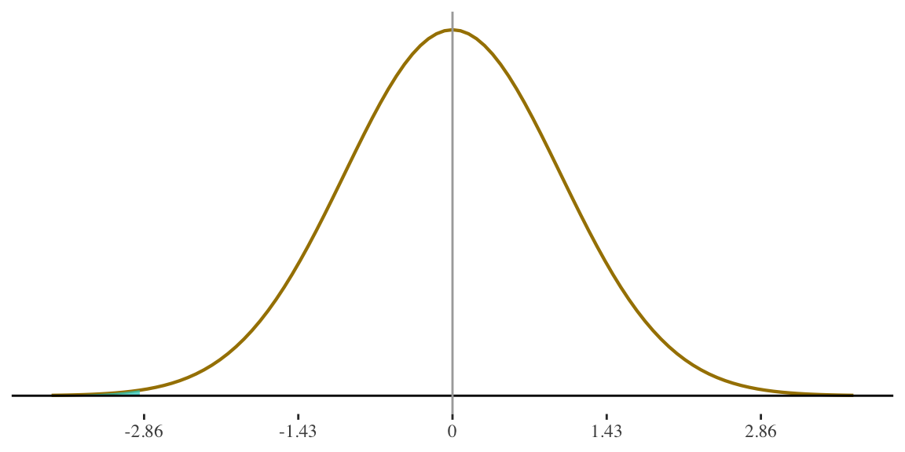
\[ z = \frac{55 - 65}{3.5} = -2.86 \]
55 inches is 2.86 standard deviations below the mean.
Now we look up the associated probability for our z-score
1. Percentage of women shorter than 55 inches?
Height for women is
\(N(65,3.5)\)
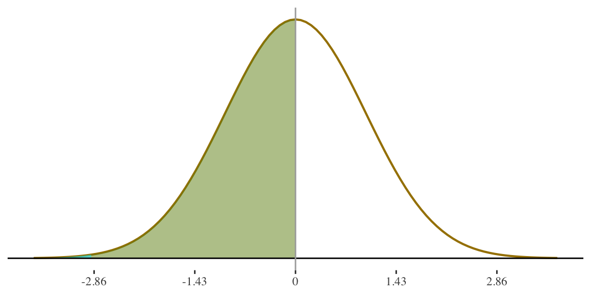
\[ z = \frac{55 - 65}{3.5} = -2.86 \]
This area is \(.49711\)
Proportion of cases under this shaded part of the curve is \(.50 - 0.49786 = 0.0021374\)
\[ \text{Percentage}(<55) = \] \[ 0.0021374(100) = \] \[ .214\% \]
2. Percentage of women 55 inches or taller?
Height for women is
\(N(65,3.5)\)
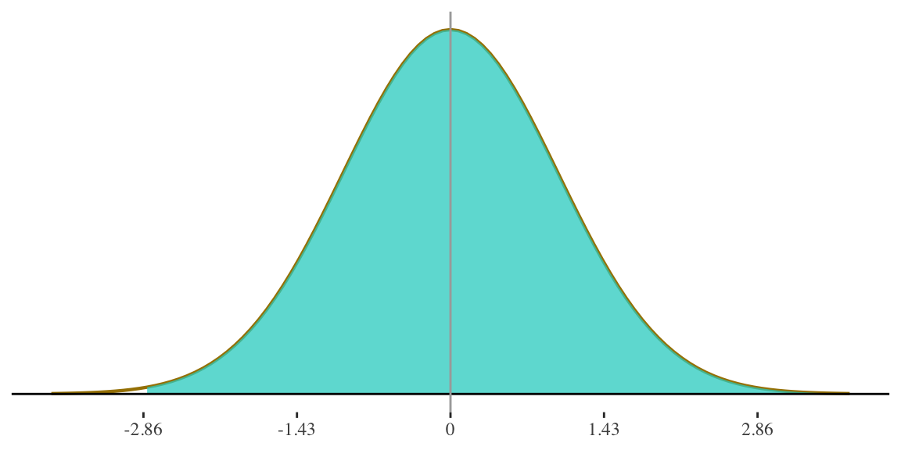
\[ z = \frac{55 - 65}{3.5} = -2.86 \]
55 inches is 2.86 standard deviations below the mean.
\[ \text{Percentage}(\ge55) = \] \[ 100- 0.214 = \] \[ 99.786\% \]
3. Probability of randomly selecting a woman who is 69 inches or taller?
Height for women is
\(N(65,3.5)\)
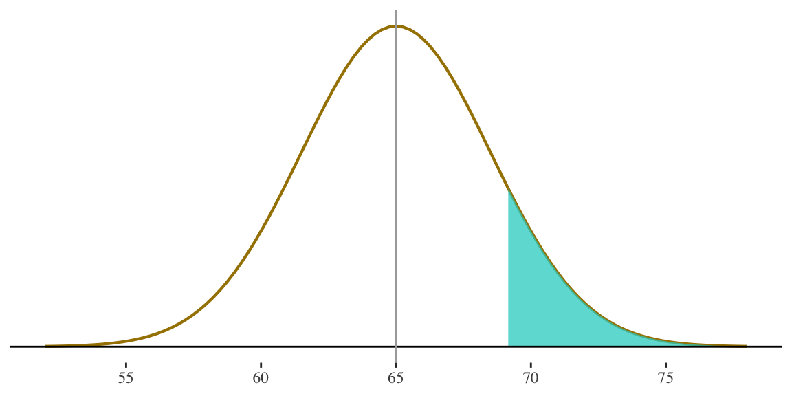
\[ z = \frac{69 - 65}{3.5} = 1.14 \]
69 inches is 1.14 standard deviations above the mean.
3. Probability of randomly selecting a woman who is 69 inches or taller?
Height for women is
\(N(65,3.5)\)
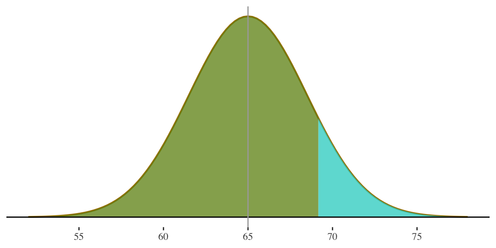
\[ z = \frac{69 - 65}{3.5} = 1.14 \]
69 inches is 1.14 standard deviations above the mean.
This area is \(0.50 + 0.37345 = 0.87345\) i.e. left half of the distribution plus the area between the mean and z-score of \(1.14\)
\[ P(\ge69) = \] \[ 1 - 0.87345 = \] \[ 0.12655 \]
4. Probability of randomly selecting two women, on consecutive draws, who are 69 inches or taller?
Height for women is
\(N(65,3.5)\)

\[ z = \frac{69 - 65}{3.5} = 1.14 \]
\[ P(\ge69) = \] \[ 1 - 0.87345 = \] \[ 0.12655 \]
Since BOTH events must happen, use the multiplication rule
\[ P(\ge69, \ge69) = \] \[ (0.12655)(0.12655) = \] \[ 0.016 \]
5. Find the score at the 10th percentile in the distribution.
Height for women is
\(N(65,3.5)\)
We need to take a
BACKWARDS APPROACH
5. Find the score at the 10th percentile in the distribution.
Height for women is
\(N(65,3.5)\)
Now we look up the associated probability (\(0.10\)) to find our z-score
This shaded area represents the 10th percentile
5. Find the score at the 10th percentile in the distribution.
Height for women is
\(N(65,3.5)\)
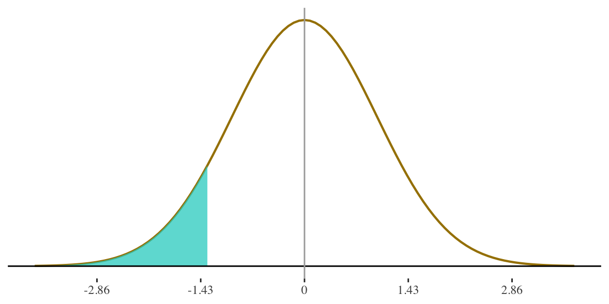
The 10th percentile is associated with a z-score of \(-1.28\)
Instead of converting a value of
interest into a z-score . . . \[
z = \frac{X - \mu}{\sigma}
\]
. . . we need to convert our z-score
of interest into a value \[
X = \mu + z(\sigma)
\]
\[ X = 65 + (-1.28)(3.5) = 60.52 \]
Interpretation: The 10th percentile is at 60.52 inches. About 10% of women are 5 ft. ½ inch or shorter, and about 90% are taller.
6. Find the two heights that define the middle 95% of cases in the distribution.
Height for women is
\(N(65,3.5)\)
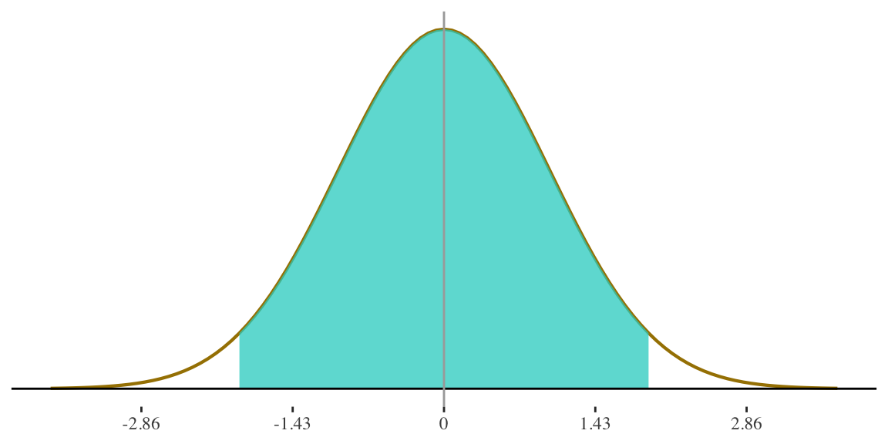
- Since capturing MIDDLE \(95\%\), we need to go the same direction above and below the mean
- How far on either side of the mean do we need to go in order to
capture \(\frac{95}{2} = 47.5\%\) of the cases?
Scores defining the middle 95% of cases (in any normal distribution) are at \(Z = -1.96\) and \(Z = 1.96\)
6. Find the two heights that define the middle 95% of cases in the distribution.
Height for women is
\(N(65,3.5)\)
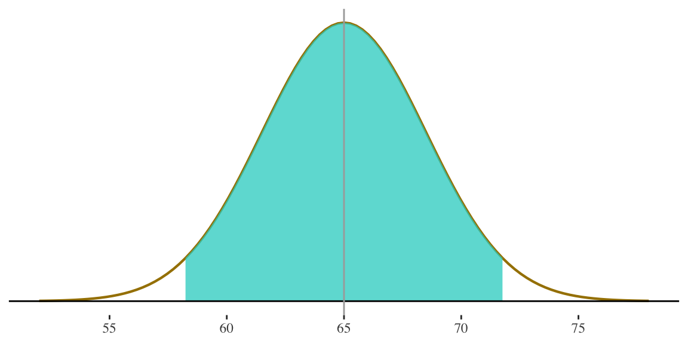
- Since capturing MIDDLE \(95\%\), we need to go the same direction above and below the mean
- How far on either side of the mean do we need to go in order to
capture \(\frac{95}{2} = 47.5\%\) of the cases?
Scores defining the middle 95% of cases (in any normal distribution) are at \(Z = -1.96\) and \(Z = 1.96\)
\[ X = \mu + z(\sigma) \] \[ X = 65 + (-1.96)(3.5) = 58.14 \] \[ X = 65 + (1.96)(3.5) = 71.86 \]